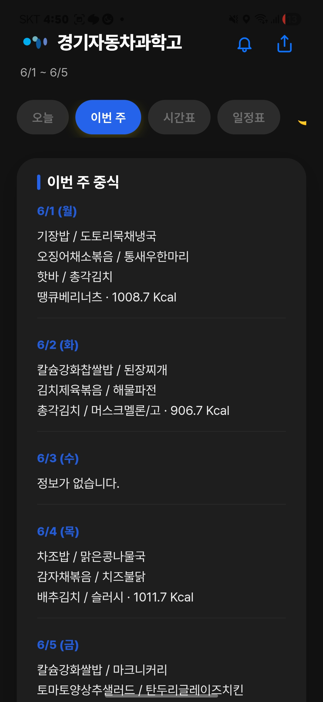

GHAS 알리미
학교생활을 더 간편하게, GHAS 알리미
경기자동차과학고등학교 학생들을 위한
급식·시간표·일정·방과후·학생 바코드 통합 서비스
급식
시간표
일정표
방과후
바코드

앱 화면 이미지 추가 예정
주간 급식
이번 주 급식을 미리 확인
평일 중식과 석식을 주간 단위로 확인하여
한 주의 식단을 한눈에 볼 수 있습니다.

앱 화면 이미지 추가 예정

앱 화면 이미지 추가 예정
주간 급식 조회
중식·석식 확인
날짜별 메뉴 확인